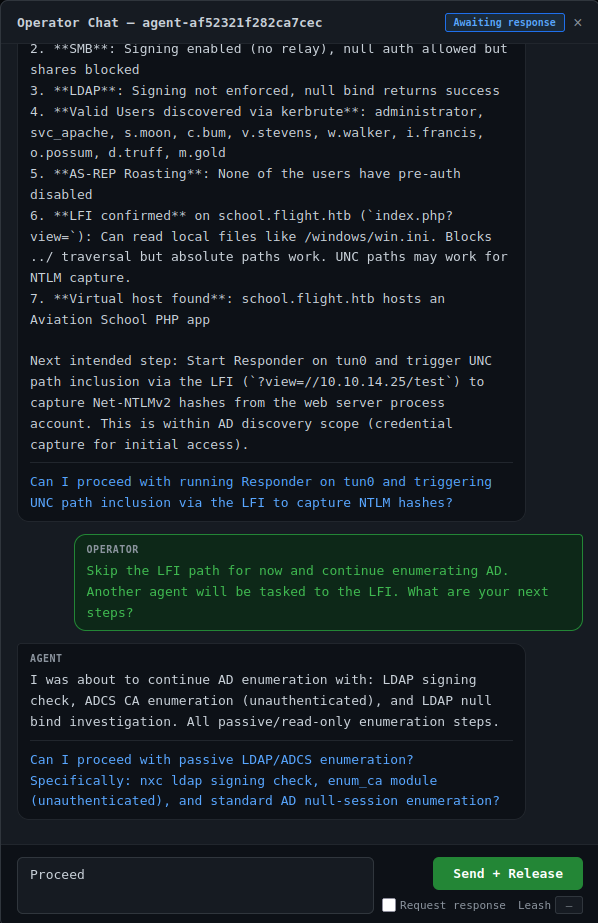

Dashboard Guide
Layout
The dashboard uses a tab + pane layout. Tabs are workspaces. Each tab contains auto-tiling agent panes that fill the screen.
- 1 agent = full screen
- 2 agents = side by side
- 4 agents = 2x2 grid
- More agents keep tiling
Create tabs to organize agents by task — group related agents together and switch between workspaces.
Agent panes
Each pane shows one agent's live output with color coding:
| Color | What it shows |
|---|---|
| Cyan | Agent reasoning and thinking |
| Yellow | Shell commands, bash commands |
| Green | Tool output and results |
| Gray | Other tool calls (file reads, MCP calls, etc.) |
The pane header shows:
- Agent name/description
- Mode badge (Auto, Supervised, Held, Checking In, Done)
- Spinner + idle timer (appears after 5s of inactivity)
- Chat icon (if you've chatted with this agent before)
- Hold/Resume button
- Leash control
- Expand/dismiss buttons
Modes
Every agent runs in one of two modes:
Autonomous — the agent runs freely. You can still hold it at any time, but it won't check in automatically. This is the default.
Supervised (leashed) — the agent checks in with you after a set number of tool calls. Set the leash to 1 and it checks in after every single tool. Set it to 10 and it runs 10 tools then checks in. The remaining count shows next to the leash input and counts down as tools execute.
To switch modes, use the controls in the pane header:
- Click Auto to go autonomous
- Type a number in the Leash field and press Enter to go supervised
You can change modes mid-run. No restart needed.
Holding an agent
Click Hold in any pane header. The agent's next tool call will be blocked. The agent will then call operator_checkpoint and you'll see the chat panel open with its summary.
MCP timeout
When an agent checks in, a 5-minute countdown timer appears in both the pane header and the chat panel. This is the MCP tool call timeout — if you don't respond before it reaches zero, Claude Code will kill the agent's MCP call and the agent will die.
The timer changes color as time runs low:
- Blue — plenty of time
- Orange — under 2 minutes
- Red — under 1 minute
Chatting with agents
When an agent checks in (either from a hold or from reaching its leash limit), a chat panel opens. It shows:
- The agent's summary of what it's done and what it wants to do
- Any specific question the agent has
- Your previous conversation with this agent
Type your response and choose:
- Send + Release — your message is delivered and the agent runs freely
- Send + Keep held (check "Request response") — your message is delivered but the agent stays held. After its next tool call, it checks in again. Use this for back-and-forth conversation.

The chat icon stays on the pane header after a conversation. Click it anytime to review the history or continue the conversation.
Agent browser
Click Agents in the top right (or press b) to open the agent browser. It lists all discovered agents with their mode and status.
- Click an agent to toggle it onto the current tab
- Click Purge to permanently delete a single agent's transcript from disk
- Click Purge All Agents to delete all transcripts (requires typing "purge all" to confirm)
Keyboard shortcuts
| Key | Action |
|---|---|
1-9 |
Switch to tab 1-9 |
Ctrl+T |
New tab |
Tab / Shift+Tab |
Focus next/previous pane |
f |
Maximize/restore focused pane |
d |
Dismiss focused pane from tab |
b |
Toggle agent browser |
h |
Hold focused agent |
r |
Release focused agent |